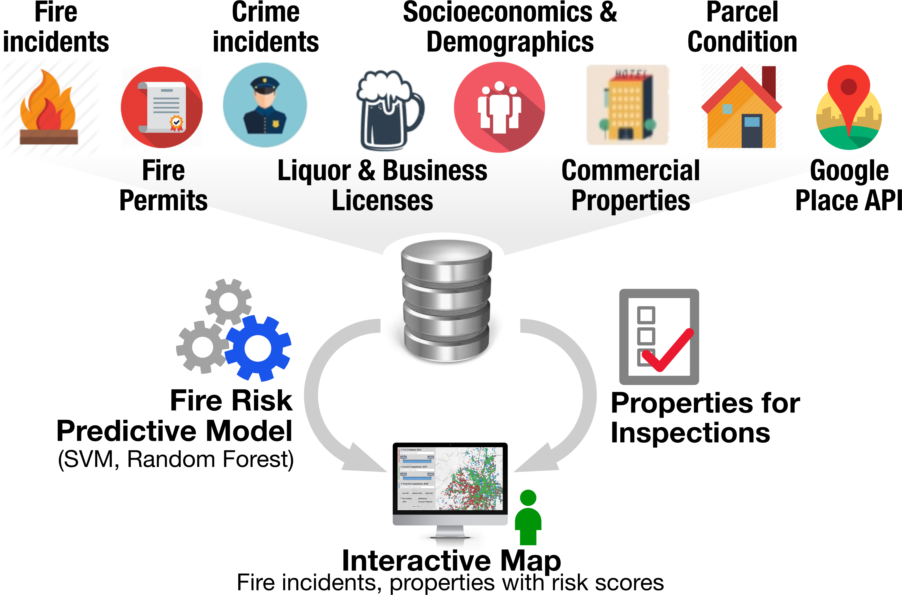
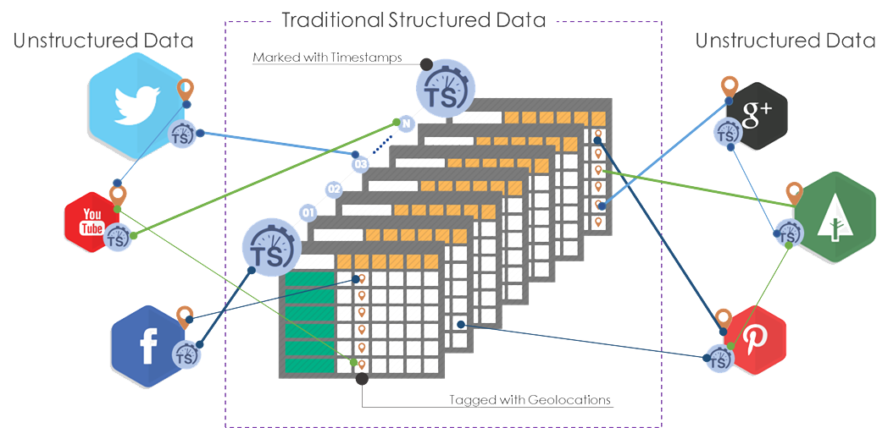

Option Paper: Develop Urban Growth Boundary using Ceullular Automata Model Based on Green Infrastructure Anlysis: A Case Study of Chun'An County, China
Journal
The Role of Urban Form in the Performance of Shared Automated Vehicles.
Kaidi Wang, Wenwen Zhang Under Review 2020
Residential Location Choice in the Era of Shared Autonomous Vehicles.
Wenwen Zhang, Subhrajit Guhathakurta, Journal of Planning Education and Research 2018
Estimating Residential Energy Consumption in Metropolitan Areas: A Microsimulation Approach.
Wenwen Zhang, Caleb Robinson, Subhrajit Guhathakurta, Venu M Garikapati, Bistra Dilkina, Marilyn A Brown, Ram M Pendyala, Energy, 155, 162-173, 2018
The Impact of Private Autonomous Vehicles on Vehicle Ownership and Unoccupied VMT Generation.
Wenwen Zhang, Subhrajit Guhathakurta, Elias Khalil, Transportation Research Part C: Emerging Technologies, 90, 156-165, 2018
A Generalizable Method for Estimating Household Energy by Neighborhoods in US Urban Regions.
Wenwen Zhang, Subhrajit Guhathakurta, Ram Pendyala, Venu Garikapati, Catherine Ross Energy Procedia, 143, 859-864, 2017
Parking Spaces in the Age of Shared Autonomous Vehicles: How Much Parking Will We Need and Where?
Wenwen Zhang, Subhrajit Guhathakurta, Transportation Research Record, Journal of the Transportation Research Board, 2651, 81-90, 2017
Estimating Household Travel Energy Consumption in Conjunction with a Travel Demand Forecasting Model.
Garikapati, V.M., D. You, W. Zhang, R.M. Pendyala, S. Guhathakurta, M. Brown, and B. Dilkina, Transportation Research Record, Journal of the Transportation Research Board, 2668, 1-10, 2017
Development of a Community Planning Support System based on Open Data: Flow-based Planning Tool in the City of Atlanta. Ge Zhang, Wenwen Zhang, Subhrajit Guhathakurta, Nisha Botchwey, Environment and Planning B: Urban Analytics and City Science, 0, 1-19, 2017
Trends in Automobile Energy Use and GHG Emissions in Suburan and Inner City Neighborhoods: Lessons from Metropolitan Phoenix, USA. Wenwen Zhang, Subhrajit Guhathakurta, Catherine Ross, Energy Procedia, 88, 82-85, 2016.
Exploring the Impact of Shared Autonomous Vehicles on Urban Parking Demand: An Agent-Based Simulation Approach.
Wenwen Zhang, Subhrajit Guhathakurta, Jinqi Fang, Ge Zhang, Sustainable Cities and Society, 19, 34-35, 2015.
Book Chapter
How Should Planners be Trained to Handle Big Data.
Steven P. French, Camille Barchers, Wenwen Zhang, Seeing Cities Through Big Data - Research, Methods and Applicaitons in Urban Informatics, 2015.
Conference
The Impact of Private Autonomous Vehicles on Vehicle Ownership and Unoccupied VMT Generation
Wenwen Zhang, Subhrajit Guhathakurta, Elias Khalil, TRB Annual Meeting, Jan. 7-11, Washington D.C., 2018.
Residential Location Choice for Workers in the Era of Shared Autonomous Vehicles
Wenwen Zhang, Subhrajit Guhathakurta, ACSP Conference, Nov. 3-6, Portland, OR, 2016.
Housing Value Resilience in TOD vs. TAD: Evidence from the City of Atlanta
Wenwen Zhang, Fangru Wang, Camille Barchers, and Yongsung Lee, ACSP Conference, Nov. 3-6, Portland, OR, 2016.
Parking Spaces in the Age of Shared Autonomous Vehicles: How Much Parking Will We Need and Where?
Wenwen Zhang, Subhrajit Guhathakurta, Catherine Ross , UPE Conference, May. 31- Jun. 3, Lisbon, Portugal, 2016.

Firebird: Predicting Fire Risk and Prioritizing Fire Inspections in Atlanta.
Michael Madaio, Shang-Tse Chen, Oliver L. Haimson, Wenwen Zhang, Xiang Cheng, Matthew Hinds-Aldrich, Duen Horng Chau, Bistra Dilkina, ACM SIGKDD Conference on Knowledge Discovery and Data Mining (KDD), Aug. 13- 17, San Francisco, CA, 2016.
Development and Application of Guideline for Open Source Data Based Community Planning Support System Development: Neighborhood Quality of Life and Health in City of Atlanta.
Ge Zhang, Wenwen Zhang, Subhrajit Guhathakurta , CUPUM Conference, Jul. 7-10, Boston, MA, 2015.

Moving Beyond Operations: Leveraging Big Data for Urban Planning Decisions.
Steven P. French, Camille Barchers, Wenwen Zhang, CUPUM Conference, Jul. 7-10, Boston, MA, 2015.
Hierarchical Controls on Watershed Stormwater: Land Use/Cover Composition and Connectivity .
Ge Zhang, Subhrajit Guhathakurta, Wenwen Zhang, CUPUM Conference, Jul. 7-10, Boston, MA, 2015.
The Performance and Benefits of a Shared Autonomous Vechicles Based Dynamic Ridesharing System: An Agent-Based Simulation Approach.
Wenwen Zhang, Subhrajit Guhathakurta, Jinqi Fang, Ge Zhang, TRB Conference, Jan. 11-17, Washington D.C., 2015.
Spider Maps: Summary of Best Practices and Guide to Design.
Wenwen Zhang, Margaret Carragher, Ann Jacobs, TRB Conference, Jan. 11-17, Washington D.C., 2014.
Urban Transport Energy Consumption Explored Through 3D ARC Maps.
Stephanie Schweitzer, Ariane Middel, Wenwen Zhang, IEEE VisWeek, Oct. 13-18, Atlanta, GA, 2013.
Modeling Nonstructural Damage for Metropolitan Building Stocks.
Steven P. French, Wenwen Zhang, Joint AESOP/ACSP Congress, Jul. 15-19 Dublin, Ireland, 2013.
The Effects of Compact Development on Travel Behavior, Energy Consumption and GHG Emissions: Lessons from Neighborhoods in Phoenix Metropolitan Area
.
Wenwen Zhang, Subhrajit Guhathakurta, Joint AESOP/ACSP Congress, Jul. 15-19 Dublin, Ireland, 2013.
From Component to Metro Region: Modeling the Benefits of Non-structural Seismic Improvement.
Steven P. French, Wenwen Zhang, NEES, Oct. 26-27, Reno, Nevada.
Teaching
Lecturer of Record
Virginia Tech
Computer Application in Planning - Spatial Data Analytics and Visualization. UAP5114 |
Fall 2019.
Urban Regional Analysis. UAP3024 |
Fall 2019.
Urban Regional Analysis. UAP3024 |
Fall 2018.
Computer Application in Planning - Planning Analytics. UAP5114 |
Spring 2018.
Urban Regional Analysis. UAP3024 |
Fall 2017.
Georgia Institute of Technology
Introduction to GIS. CP6514 | Spring 2017.
Introduction to GIS. CP6514 |
Fall 2016. Guest lectures
Geocoding Using Python and Google API and Built Environment Measurement Quantifcation in GIS for CP6051 Transportation and GIS. Instructor: Thomas Hamed. Spring 2016. Georgia Tech.
Invited Talks
Jul. 23, 2015
Predicting Fire Risk in Atlanta using Data Science
Atlanta Fire and Rescue Department, Georgia. Host: Dr. Matt Hinds-Aldrich, Chief Baker, and Chief Operating Officer Mike Geisler.
Jun. 15, 2013
Implementation of GIS Technology in Urban Transportation Planning
School of Urban Planning and Design (SUPD). Peking University Graduate School, Shenzhen, China. Host: Prof. Jiawen Yang.
May 20, 2013
Using GIS Model Builder and Google API to Empower Transit Paper Maps Generation Process
Metropolitan Atlanta Rapid Transit Authority (MARTA), Atlanta, Georgia. Host: Ryan VanSickle.
Press
Services At Georgia Tech
Webmaster. 2014-2015.
Skills
- Urban Moelling
- ArcGIS | QGIS
- TransCAD | CUBE
- UrbanSim
- Programming
- Python
- SQL
- JavaScript
- CSS
- HTML
- Design
- Photoshop
- Illustrator
- InDesign
- 3D Studio MAX
- Rhino
- V-RAY
- Grasshopper
- Hobbies
- Pianist (20+ years)
- Paintist (20+ years)
- Languages
- English
- Mandarin (Native)